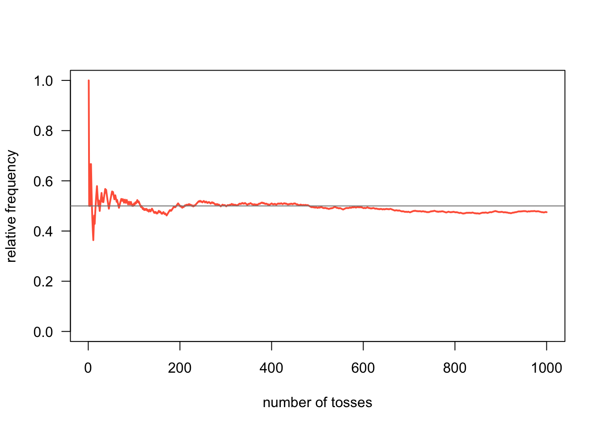
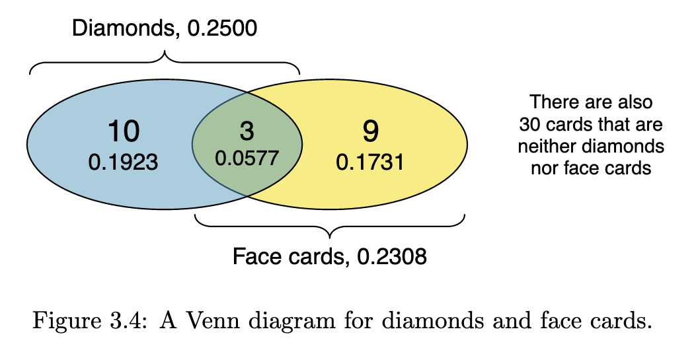
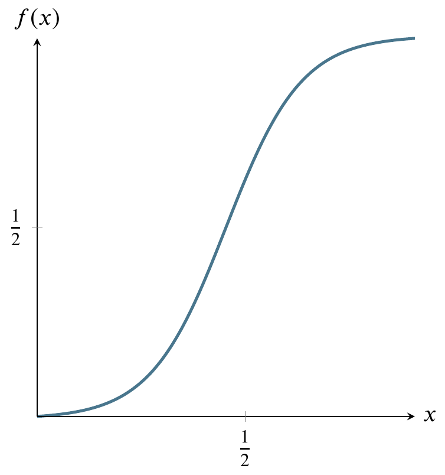
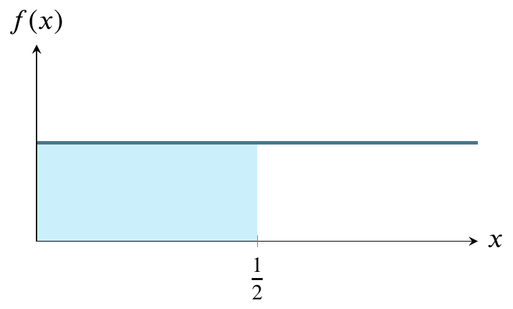

We did some exercises, for which there are now solutions in the file week03exercises.qmd and week03exercises.html. You should examine and compare these two files.
For each student, we calculated the number of exercises successfully completed. Following is a stem and leaf diagram, as well as summary statistics.
x<-scan("week03exercisesList.txt")stem(x)
The decimal point is at the |
0 | 000
2 | 0
4 | 0000000
6 | 00000000
8 | 0000000
10 | 0
summary(x)
Min. 1st Qu. Median Mean 3rd Qu. Max.
0.00 4.50 6.00 5.63 8.00 10.00
sd(x)
[1] 2.691127
You can make a number of inferences from this information. First, we should generally expect the average student to be able to complete six exercises during class time. If you completed fewer, you may need extra work outside class. If you completed more, you probably need less time outside of class. We can also see that the mean has been dragged downward by the students who didn’t turn anything in, so the median is a better measure of centrality.
We can compare the stem and leaf plot to the following histogram and see that the stem and leaf plot looks kind of like a histogram turned on its side, and with a bit more information, especially if we alter the scale, so that it’s not compressed to two exercises per row.
hist(x)
stem(x,scale=2)
The decimal point is at the |
0 | 000
1 |
2 | 0
3 |
4 | 000
5 | 0000
6 | 00000
7 | 000
8 | 000000
9 | 0
10 | 0
We also talked about milestone 1, for which there are some hints in week03.qmd.
4.2 Bayesian approach
There are two competing schools of thought about what probability is. The bayesian approach is that probability is quantified belief or reasonable expectation of the outcomes of events based on a state of knowledge. This approach is recently taught in graduate schools. We will not extensively study this approach, but I want you to know that it exists and is rising in academic popularity.
4.3 Frequentist approach
Our textbook takes a frequentist approach to probability, one of the two main approaches to probability and the one usually taught in undergraduate courses in the USA. This approach models probability of an outcome as the number of times the outcome would occur if we observed the random process that produced it an infinite number of times. For example, if we flip a fair coin an infinite number of times, it comes up heads half the time, so the probability of heads is 0.5.
4.4 The law of large numbers
This law claims that, as more outcomes are observed, the proportion of outcomes converges to the probability of the outcome. For example, if we flip a fair coin a hundred times, the probability of heads coming up half the time is greater than if we only flip it ten times.
The textbook uses the examples of rolling fair dice and flipping fair coins. Gaston Sanchez gives the example of flipping a fair coin modeled in R.
#. number of flipsnum_flips <-1000#. flips simulationcoin <-c('heads', 'tails')flips <-sample(coin, size = num_flips, replace =TRUE)#. number of heads and tailsfreqs <-table(flips)freqs
flips
heads tails
475 525
heads_freq <-cumsum(flips =='heads') /1:num_flipsplot(heads_freq, # vectortype ='l', # line typelwd =2, # width of linecol ='tomato', # color of linelas =1, # orientation of tick-mark labelsylim =c(0, 1), # range of y-axisxlab ="number of tosses", # x-axis labelylab ="relative frequency") # y-axis labelabline(h =0.5, col ='gray50')

4.5 Disjoint outcomes
These are outcomes that can not both happen. For example, in the fair coin flipping case, the outcome cannot be both heads and tails. But the sum of all the disjoint probabilities is always 1.
4.6 Probabilities when outcomes are not disjoint
The textbook uses playing cards to illustrate concepts like cards that are neither diamonds nor face cards. You have to familiarize yourself with playing cards to understand these examples. The textbook uses the following Venn diagram to illustrate the above example.

4.7 General addition rule
The textbook gives a general rule for multiple outcomes, whether they are disjoint or not.
If A and B are any two events, disjoint or not, then the probability that at least one of them will occur is
\[
P (A\text{ or }B) = P (A) + P (B) − P (A\text{ and }B)
\]
where \(P (A\text{ and }B)\) is the probability that both events occur.
4.8 Probability distributions
A probability distribution is a list of the possible outcomes with corresponding probabilities that satisfies three rules:
The outcomes listed must be disjoint.
Each probability must be between 0 and 1.
The probabilities must total 1.
4.9 Probability distribution for two fair dice
Francis DiTraglia shows the following example of plotting the probability distribution for rolling two fair dice on his website.
Set theory is a mathematical discipline that uses tools like Venn diagrams to describes sets of objects. We can think of outcomes from random processes as objects, too, with the following terms.
sample space: the set of all possible outcomes
event: a particular outcome
complement of an event: outcomes in the sample space outside a given event or events
The complement of event \(A\) is denoted \(A^c\), and \(A^c\) represents all outcomes not in \(A\). \(A\) and \(A^c\) are mathematically related:
\[
P (A) + P (A^c) = 1, \text{ i.e. } P (A) = 1 − P (A^c)
\]
4.11 Independence
Just as variables and observations can be independent, random processes can be independent, too. Two processes are independent if knowing the outcome of one provides no useful information about the outcome of the other. For instance, flipping a coin and rolling a die are two independent processes—knowing the coin was heads does not help determine the outcome of a die roll. On the other hand, stock prices usually move up or down together, so they are not independent.
4.12 Multiplication rule for independent processes
If \(A\) and \(B\) represent events from two different and independent processes, then the probability that both \(A\) and \(B\) occur can be calculated as the product of their separate probabilities:
\[
P (A\text{ and }B) = P (A) × P (B)
\]
Similarly, if there are \(k\) events \(A_1, \ldots, A_k\) from \(k\) independent processes, then the probability they all occur is
\[
P (A_1) × P (A_2) × \cdots × P (A_k)
\]
4.13 Conditional probability
This is where probability gets interesting. Some things depend on other things! The textbook uses a contingency table of the photos_classify data frame, which you can download from OpenIntro Stats, to explore this concept.
truth
mach_learn fashion not Sum
pred_fashion 197 22 219
pred_not 112 1491 1603
Sum 309 1513 1822
We can use the entries in the contingency table to make statements about probability.
probability that a fashion photo is correctly classified by ML: 197/309
probability that a given photo is about fashion when predicted by ML to be not: 112/1603
Marginal probability is the probability in the margins of table (right column and bottom row), e.g., ML predicts fashion photo at all: 219/1822.
Joint probability is the probabillity of two (or more) things being true, e.g., ML predicts fashion and truth is fashion: 197/1822. A joint probability would be any of the four interior cells divided by the lower right cell.
Conditional probability is the probability of some outcome given the condition of another outcome, such as the probability that ML predicts fashion when the photo is truly about fashion: 197/219.
Conditional probability is very important. It’s useful to know the general formula for conditional probability. The conditional probability of outcome \(A\) given condition \(B\) is computed as the following:
\[
P (A|B) = \frac{P (A\text{ and }B)}{P (B)}
\]
4.14 General multiplication rule
We already saw a specific multiplication rule for independent events. But there is a more general rule, applicable whether independence is true or not. If \(A\) and \(B\) represent two outcomes or events, then
\[
P (A\text{ and }B) = P (A|B) × P (B)
\]
It is useful to think of \(A\) as the outcome of interest and \(B\) as the condition.
4.15 Tree diagrams of probability
The textbook claims that tree diagrams aid our thinking about conditional probabilities. Luckily, law professor Harry Surden provides an example of a tree diagram of probabilities on his website.
#.. R Conditional Probability Tree Diagram#.. The Rgraphviz graphing package must be installed to do thislibrary(Rgraphviz)#.. Change the three variables below to match your actual values#.. These are the values that you can change for your own probability tree#.. From these three values, other probabilities (e.g. prob(b)) will be calculated#.. Probability of aa<-.01#.. Probability (b | a)bGivena<-.99#. Probability (b | ¬a)bGivenNota<-.10###################### Everything below here will be calculated#. Calculate the rest of the values based upon the 3 variables abovenotbGivena<-1-bGivenanotA<-1-anotbGivenNota<-1-bGivenNota#. Joint Probabilities of a and B, a and notb, nota and b, nota and notbaANDb<-a*bGivenaaANDnotb<-a*notbGivenanotaANDb <- notA*bGivenNotanotaANDnotb <- notA*notbGivenNota#. Probability of Bb<- aANDb + notaANDbnotB <-1-b#. Bayes theorum - probabiliyt of A | B#. (a | b) = Prob (a AND b) / prob (b)aGivenb <- aANDb / b#. These are the labels of the nodes on the graph#. To signify "Not A" - we use A' or A primenode1<-"P"node2<-"A"node3<-"A'"node4<-"A&B"node5<-"A&B'"node6<-"A'&B"node7<-"A'&B'"nodeNames<-c(node1,node2,node3,node4, node5,node6, node7)rEG <-new("graphNEL", nodes=nodeNames, edgemode="directed")#. Draw the "lines" or "branches" of the probability TreerEG <-addEdge(nodeNames[1], nodeNames[2], rEG, 1)rEG <-addEdge(nodeNames[1], nodeNames[3], rEG, 1)rEG <-addEdge(nodeNames[2], nodeNames[4], rEG, 1)rEG <-addEdge(nodeNames[2], nodeNames[5], rEG, 1)rEG <-addEdge(nodeNames[3], nodeNames[6], rEG, 1)rEG <-addEdge(nodeNames[3], nodeNames[7], rEG, 10)eAttrs <-list()q<-edgeNames(rEG)#. Add the probability values to the the branch lineseAttrs$label <-c(toString(a),toString(notA),toString(bGivena), toString(notbGivena),toString(bGivenNota), toString(notbGivenNota))names(eAttrs$label) <-c(q[1],q[2], q[3], q[4], q[5], q[6])edgeAttrs<-eAttrs#. Set the color, etc, of the treeattributes<-list(node=list(label="foo", fillcolor="lightgreen", fontsize="15"),edge=list(color="red"),graph=list(rankdir="LR"))#. Plot the probability tree using Rgraphvisplot(rEG, edgeAttrs=eAttrs, attrs=attributes)nodes(rEG)
#. Add the probability values to the leaves of A&B, A&B', A'&B, A'&B'text(500,420,aANDb, cex=.8)text(500,280,aANDnotb,cex=.8)text(500,160,notaANDb,cex=.8)text(500,30,notaANDnotb,cex=.8)text(340,440,"(B | A)",cex=.8)text(340,230,"(B | A')",cex=.8)#. Write a table in the lower left of the probablites of A and Btext(80,50,paste("P(A):",a),cex=.9, col="darkgreen")text(80,20,paste("P(A'):",notA),cex=.9, col="darkgreen")text(160,50,paste("P(B):",round(b,digits=2)),cex=.9)text(160,20,paste("P(B'):",round(notB, 2)),cex=.9)text(80,420,paste("P(A|B): ",round(aGivenb,digits=2)),cex=.9,col="blue")
It’s pretty ugly because it was designed for a different width and height than I have allocated, but it gives the general idea.
4.16 Bayes’ Theorem
It’s the centerpiece of Bayesian statistics so it’s a bit like a fish out of water in a frequentist course. It states, in words, that the posterior probability of an outcome \(A\) given an outcome \(B\) is the likelihood of the outcome \(B\) times the prior probability of the outcome \(A\) divided by the evidence of outcome \(B\). More succinctly,
\[
P(A|B)=\frac{P(B|A)P(A)}{P(B)}
\]
The intuition is that we usually know something and shouldn’t go into problem solving with no assumptions. An example of drug user testing given by Wikipedia is shown below graphically, where the test is ninety percent sensitive to a recipient being a drug user. The test is also eighty percent specific, meaning that it can detect that a non-user is a non-user eighty percent of the time.
What does this tell us about drug testing? Even if someone tests positive, the probability that they are a drug user is only 19%! This assumes prior knowledge that five percent of the general population are users of the drug.
In Bayesian terms:
\[
\frac{0.9 \times 0.05}{0.9\times 0.05 + 0.2\times0.95}
\] By the way, this formulation uses the law of total probability in the denominator, expanding \(P(B)\) into
\[
P(B|A)P(A)+P(B|\neg A)P(\neg A)
\]
where \(\neg A\) is the complement of \(A\).
This is very important to know about because, for example, someone might only tell you that a test is ninety percent sensitive and eighty percent specific and leave out the Bayes rule result that says that, given that only five percent of the general population are drug users, there’s a nineteen percent chance that testing positive indicates that you are a drug user. Again, Bayes’ rule is very important when you have some prior knowledge. In this case, the prior knowledge is a study that says that five percent of the general population are users of this drug.
4.17 Sampling from a small population
Recall that the population includes every object and is usually not practical to measure. For examples, every fish, every person, every thunderstorm are too many to represent. So we take a sample. A typical rule of thumb is that, if we can sample more than ten percent of the population, we regard it as a small population.
The textbook gives an example of being called on by the professor. The chance that you are called on in a class of 15 is 1/15. If the professor calls on three different people in succession, the chance that you are called on increases to 1/5:
\[\begin{align}
P(\neg\text{3 in a row}) &=\\
&=P(\text{not picked first, second, third})\\
&=\frac{14}{15}\times\frac{13}{14}\times\frac{12}{13}\\
&=\frac{12}{15}\\
\end{align}\]
and the complement of 12/15 is 1/5.
4.18 Random variables
A process with a random numerical outcome is called a random variable. It’s kind of like a stochastic function in that there is an input (the process) and output (the outcome number).
A random variable is usually represented as a capital, italicized Latin letter, e.g., \(X, Y, Z\). Specific outcomes are usually represented as a lowercase, italicized Latin letter with a subscript to denote which outcome, such as \(x_1, x_2, x_3\). The probability that a random variable \(X\) has a specific outcome \(x_1\) is represented as \(P(X=x_1)\).
The expectation of \(X\) is the expected value of \(X\), represented as \(E(X)\). The expected value is typically the average, but not always. If there are \(k\) possible outcomes, then
\[
E(X)=\sum_{i=1}^kx_iP(X=x_i)
\]
The Greek letter \(\sum\) (Sigma) denotes a sum of a series of numbers, indexed in this case by \(i\). You can read it in English as the sum, going from \(1\) to \(k\), of the expressions to the right of the Sigma sign. In other words,
\[
x_1P(X=x_1)+x_1P(X=x_1)+\cdots+x_kP(X=x_k)
\]
It’s the average as we usually understand it if each outcome is equally probable, in which case it’s the sum of the outcomes divided by the number of outcomes.
Writers often substitute \(E(X)=\mu\) which can be confusing because Greek letters are usually used as parameters, while Latin letters are usually used as specific realizations of those parameters.
The above assumes there are \(k\) specific outcomes. We call this case a discrete random variable. It’s also possible to do math with a continuous random variable. In other words, \(k=\infty\). However, that requires calculus so the textbook skips it for now.
4.18.1 Variability in random variables
Recall that random variables are a kind of mapping between a process and specific numerical outcomes. Those specific outcomes differ. For example, the revenue of a store varies day by day, and we can say something about that variability.
We usually express it by two related concepts: variance (denoted by a lowercase sigma squared or \(\sigma^2\)), and its square root, standard deviation (denoted by a lowercase sigma or \(\sigma\)). You might wonder why we don’t just choose one of these symbols. Most statisticians just use standard deviation, but to prove that it is an unbiased estimator of variance, we need to square it for mathematical reasons that are beyond the scope of this course.
Standard deviation is expressed in the same units as the subject under consideration, whereas variance is expressed in squared units. So when I said at the beginning of this file that the standard deviation of your completed exercises was about 2.69, I meant that in terms of number of exercises, meaning that most of you were within 2.69 completed exercises either way of each other. In other words, if you had three or nine completed exercises, you were a kind of outlier.
4.18.2 Linear combinations of random variables
We can put random variables together. For example, your GPA is calculated from a set of grades that may differ. If you play fantasy sports, your score comes from many different players. A recommender system for music listening may make calculations based on many different songs you listened to.
A linear combination of two random variables can be expressed as \(aX+bY\), where \(a\) and \(b\) are fixed constants, for example, the number of credits applied to each class in your GPA portfolio. If you take four four credit classes, your GPA might be expressed as the linear combination
\[
4E(X_1)+4E(X_2)+4E(X_3)+4E(X_4)
\]
where \(E(X_i)\) is a function of your grade, such as your grade mapped to a number and divided by the number of credits you’re taking. (Of course, you are used to thinking of it as the average of the grades since most classes carry the same number of credits and your grades are mapped to numbers. But this formulation holds for all kinds of sets.)
4.19 Continuous distributions
So far, we’ve considered discrete distributions, where \(k\) takes on one of a finite set of values. What about the continuous case? For example, temperature can theoretically take on an infinite number of values, even though we only have the tools for discrete measurements.
The most famous continuous distribution is the normal distribution. This picture illustrates the normal distribution. The mound-shaped curve represents the probability density function and the area between the curve and the horizontal line represents the value of the cumulative distribution function.
Consider a normally distributed nationwide test.
The total shaded area between the curve and the straight horizontal line can be thought of as one hundred percent of that area. In the world of probability, we measure that area as 1. The curve is symmetrical, so measure all the area to the left of the highest point on the curve as 0.5. That is half, or fifty percent, of the total area between the curve and the horizontal line at the bottom. Instead of saying area between the curve and the horizontal line at the bottom, people usually say the area under the curve.
For any value along the \(x\)-axis, the \(y\)-value on the curve represents the value of the probability density function.
The area bounded by the vertical line between the \(x\)-axis and the corresponding \(y\)-value on the curve, though, is what we are usually interested in because that area represents probability.
Here is a graph of the size of that area. It’s called the cumulative distribution function (cdf).

The above graph can be read as having an input and output that correspond to the previous graph of the probability density function. As we move from right to left on the \(x\)-axis, the area that would be to the left of a given point on the probability density function is the \(y\)-value on this graph. For example, if we go half way across the \(x\)-axis of the probability density function, the area to its left is one half of the total area, so the \(y\)-value on the cumulative distribution function graph is one half.
The shape of the cumulative distribution function is called a sigmoid curve. You can see how it gets this shape by looking again at the probability density function graph above. As you move from left to right on that graph, the area under the curve increases very slowly, then more rapidly, then slowly again. The places where the area grows more rapidly and then more slowly on the probability density function curve correspond to the s-shaped bends on the cumulative distribution curve.
At the left side of the cumulative distribution curve, the \(y\)-value is zero meaning zero probability. When we reach the right side of the cumulative distribution curve, the \(y\)-value is 1 or 100 percent of the probability.
Let’s get back to the example of a nationwide test. If we say that students nationwide took an test that had a mean score of 75 and that the score was normally distributed, we’re saying that the value on the \(x\)-axis in the center of the curve is 75. Moreover, we’re saying that the area to the left of 75 is one half of the total area. We’re saying that the probability of a score less than 75 is 0.5 or fifty percent. We’re saying that half the students got a score below 75 and half got a score above 75.
That is called the frequentist interpretation of probability. In general, that interpretation says that a probability of 0.5 is properly measured by saying that, if we could repeat the event enough times, we would find the event happening half of those times.
Furthermore, the frequentist interpretation of the normal distribution is that, if we could collect enough data, such as administering the above test to thousands of students, we would see that the graph of the frequency of their scores would look more and more like the bell curve in the picture, where \(x\) is a test score and \(y\) is the number of students receiving that score.
Suppose we have the same test and the same distribution but that the mean score is 60. Then 60 is in the middle and half the students are on each side. That is easy to measure. But what if, in either case, we would like to know the probability associated with scores that are not at that convenient midpoint?
It’s hard to measure any other area under the normal curve except for \(x\)-values in the middle of the curve, corresponding to one half of the area. Why is this?
To see why it’s hard to measure the area corresponding to any value except the middle value, let’s first consider a different probability distribution, the uniform distribution. Suppose I have a machine that can generate any number between 0 and 1 at random. Further, suppose that any such number is just as likely as any other such number.
Here’s a graph of the the uniform distribution of numbers generated by the machine. The horizontal line is the probability density function and the shaded area is the cumulative distribution function from 0 to 1/2. In other words, the probability of the machine generating numbers from 0 to 1/2 is 1/2. The probability of generating numbers from 0 to 1 is 1, the area of the entire rectangle.

It’s very easy to calculate any probability for this distribution, in contrast to the normal distribution. The reason it is easy is that you can just use the formula for the area of a rectangle, where area is base times side. The probability of being in the entire rectangle is \(1\times1=1\), and the probability of being in the part from \(x=0\) to \(x=1/4\) is just \(1\times(1/4)=1/4\). The cumulative distribution function of the uniform distribution is simpler than that of the normal distribution because area is being added at the same rate as we move from left to right on the above graph. Therefore it is just a straight diagonal line from (0,1) on the left to (1,1) on the right.
Reading it is the same as reading the cumulative distribution function for the normal distribution. For any value on the \(x\)-axis, say, 1/2, go up to the diagonal line and over to the value on the \(y\)-axis. In this case, that value is 1/2. That is the area under the horizontal line in the probability density function graph from 0 to 1/2 (the shaded area). For a rectangle, calculating area is trivial.
Calculating the area of a curved region like the normal distribution can be more difficult. If you’ve studied any calculus, you know that there are techniques for calculating the area under a curve. These techniques are called integration techniques. In the case of the normal distribution the formula for the height of the curve at any point on the \(x\)-axis is
The integral on the left is difficult to evaluate so people use numerical approximation techniques to find the expression on the right in the above equation. Those techniques are so time-consuming that, rather than recompute them every time they are needed, a very few people used to write the results into a table and publish it and most people working with probability would just consult the tables. Only in the past few decades have calculators become available that can do the tedious approximations. Hence, most statistics books, written by people who were educated decades ago, still teach you how to use such tables. There is some debate as to whether there is educational value in using the tables vs using calculators or smartphone apps or web-based tables or apps.
4.20 The F distribution
Another distribution that we’ll enounter later is called the F distribution. We’ll calculate an F-statistic when we build linear regression models, but I just want you to know the general shape of it for now. The region marked \(\alpha\) corresponds inversely to the magnitude of the F statistic. In other words, a larger F statistic means a smaller \(\alpha\).